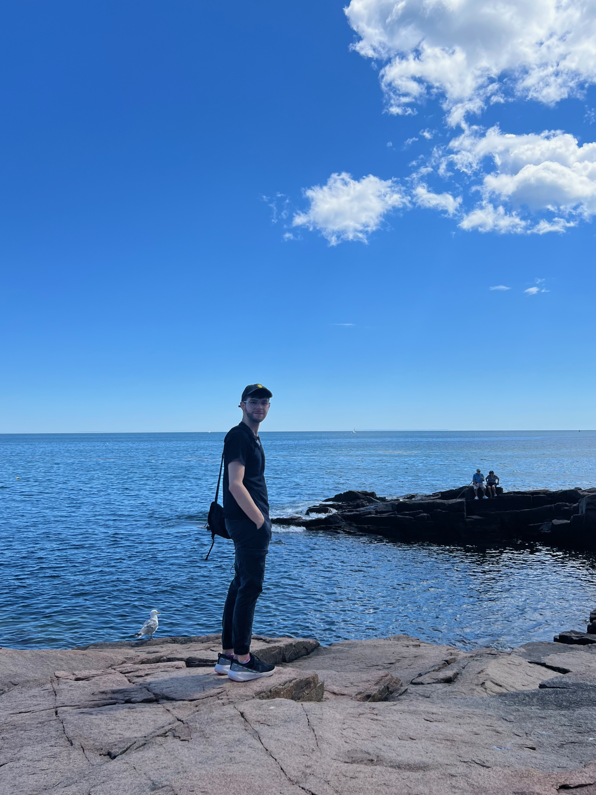

Simon (moi), c'est le meilleur1! Avec des années d'expériences en multimédia, en gestion d'équipe et en consommation de café, je suis prêt à tout affronté.
1selon ma grand-mère
Addresse: 1234, Av du College, Montréal, QC
Téléphone: (514) 123-4567
Langues parlées: Français (langue maternelle) & Anglais (fluent)
Courriel: me@slarochelle.com
Site web: slarochelle.com
Anniversaire: 26 Juin üéà
Technique en Informatique
Technique en Informatique
Technique d'Intégration Multimédia
Programme d'Étude Internationalle, Diplome du BI obtenu
Depuis que je suis tout petit, je m'intéresse beaucoup à tout ce qui touche l'informatique. Mon père m'y a introduit j'avais à peine 3-4 ans, et c'est depuis rester mon hobbie préféré.
Je m'intéresse particulièrement à ce qui est retro, j'ai une petite collection personnelle de PCs du début des années 2000 que j'aime bien explorer et utiliser pour jouer à de vieux jeux sur CD. (Notamment SimCity 3000)
J'ai l'énorme chance d'avoir beaucoup voyagé, grâce à ma grand-mère qui adore m'ammener avec elle lors de ces périples autour du monde.
<- Photo de moi au Acadia National Park, Maine, 2022
S'entourer de nature et de plante est quelque chose de très important pour moi, si seulement parce que c'est magnifique. J'ai habité plusieurs années dans la fôret en grandissant, ce qui à beaucoup encourager cet amour pour la nature. Maintenant que j'habite en ville, je remplis mon apart de plante, pour essayer de re-créer un peu de fôret chez moi.
Merci d'avoir pris le temps de faire un peu connaissance! À bientôt!